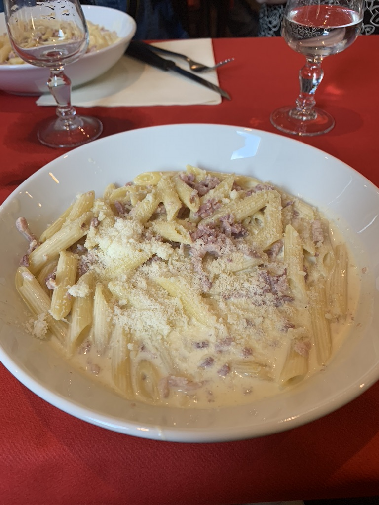

Welcome to My Food Blog!
Your go-to place for delicious recipes and food inspiration.
Featured Recipes
Pasta Da Vinci
Make the sauce: Melt the butter in a skillet over medium heat. Add the garlic and lemon zest and cook until the garlic is slightly soft, about 1 minute. Add in the flour and cook, stirring with a wooden spoon, 1 minute. Whisk in the milk and 3/4 teaspoon salt and cook, whisking constantly, until just thickened, about 3 minutes. Add the Neufchâtel and parmesan cheese; whisk until melted, about 1 minute. Stir in the chopped parsley. Meanwhile, bring a large pot of salted water to a boil. Add the fettuccine and cook until al dente, 2 to 3 minutes. Reserve 1 cup cooking water, then drain the pasta and return to the pot. Add the sauce and 1/2 cup of the reserved cooking water to the pasta and gently toss to combine, adding more cooking water as needed to loosen. Season with salt. Divide among bowls and top with parmesan and pepper.
Recipe Title
Short description of the recipe.
About Us
Information about the blog, its purpose, and the team behind it.
Contact Us
Feel free to reach out with any questions or feedback!